This data was mostly collected with funding from the National Science Foundation for research programs. You can get similar data from other locations.
Global DEMs: Bulk download gets the original files (except perhaps that the overlap top row and right column will be trimmed out); the cookie cutter option will be reprojected and reinterpolated for the higher latitudes. Bulk download is overkill as you must get the entire data set, but it is simple if you have the bandwidth and required storage, You could also figure out how to download just what you want or need, but programmer time is more expensive than bandwidth or storage.
OpenTopography now has lidar from both USGS and NOAA, with the following caveats (the original source may be better):
| Connect to
https://opentopography.org/
and pick the "Get data" option. Preferentially get the red symbol data sets, which are on the OpenTopography web site. Two ways to pick data:
|
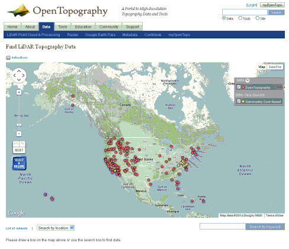 |
| With search by location, you will see a list of surveys. Use the "Get data" button for the one you want. | 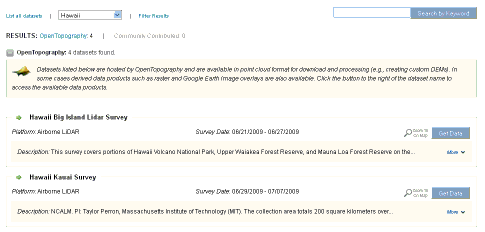 |
|
With graphical selection on the map, use the blue "Select a region"
button to pick a survey, and then pick the "Get data" button.
|
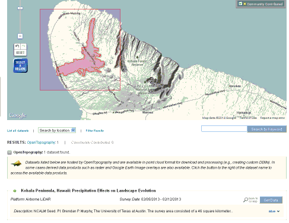 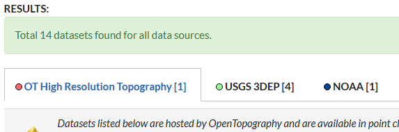 |
| To see the more complete metadata, use the "More" selector. This is the only way to see the projection used for the data. You want to avoid state plane coordinates to the maximum extent possible. You might want to save this metadata for later review. | |
The page for a data set has abbreviated metadata. It will give
the following key information:
The full metadata option includes the projection. You want to avoid state plane coordinates to the maximum extent possible. |
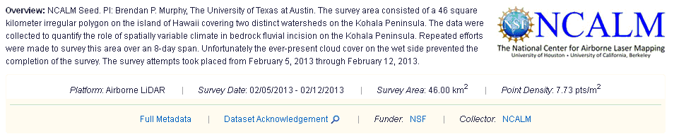 |
| Use the blue "Select a region" button to pick the region. Watch the status window below the map, which will tell you approximately how many points are in the region. You must keep reducing the area until you get under you point limit. If you really need more data, you should register for an account. | 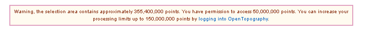 |
When you have reduced the number of points sufficiently, set the
terms of the download:
Enter a job description and title. Enter you email. Submit the job. |
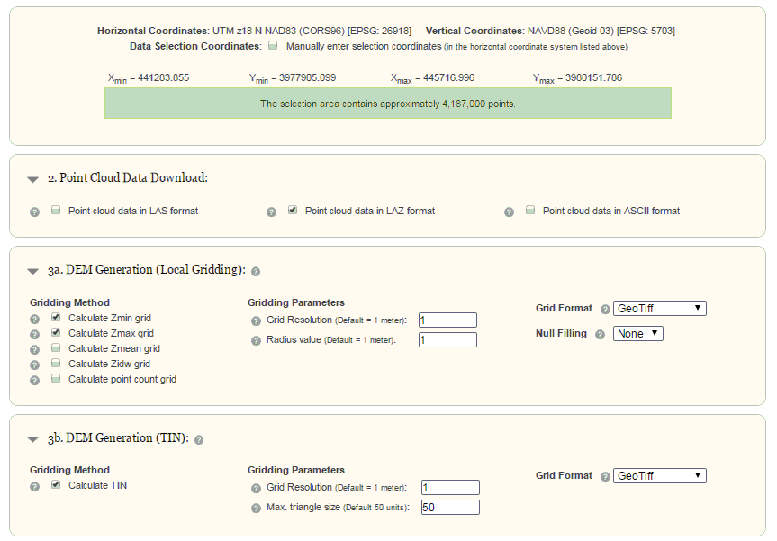 |
| You can stay on the page and watch the progress, or wait for the
email which will have download links. When done, you can download your files. Note the file names "points" and "dems" are used for every download, so insure you do not mix them on your hard disk. Put each area in a separate directory. The point cloud will be in the format you requested; use LAStools to uncompress the LAZ file. If the points file is really large, you can split it into smaller sections. This will make the display of subsets of the data much faster. |
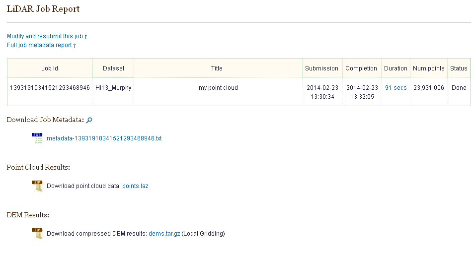 |
| If you do not wait for you downloads to be prepared, you will get an email, which will direct you back to the page above. | 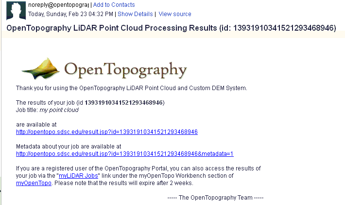 |
| Notes on global DEMs | |
|
AWS Bulk downloads. There is an option to do bulk downloads after you have selected an OpenTopography data set. You should only do this if you have to download a very large area, or you do not want to deal with reinterpolation done by OpenTopography in some cases.
|
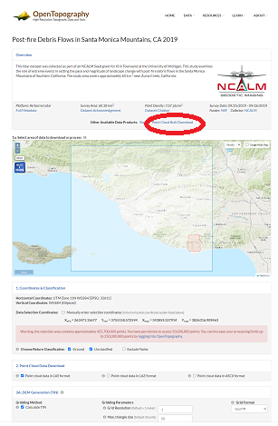 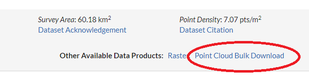 |
Last revised 2/15/2023